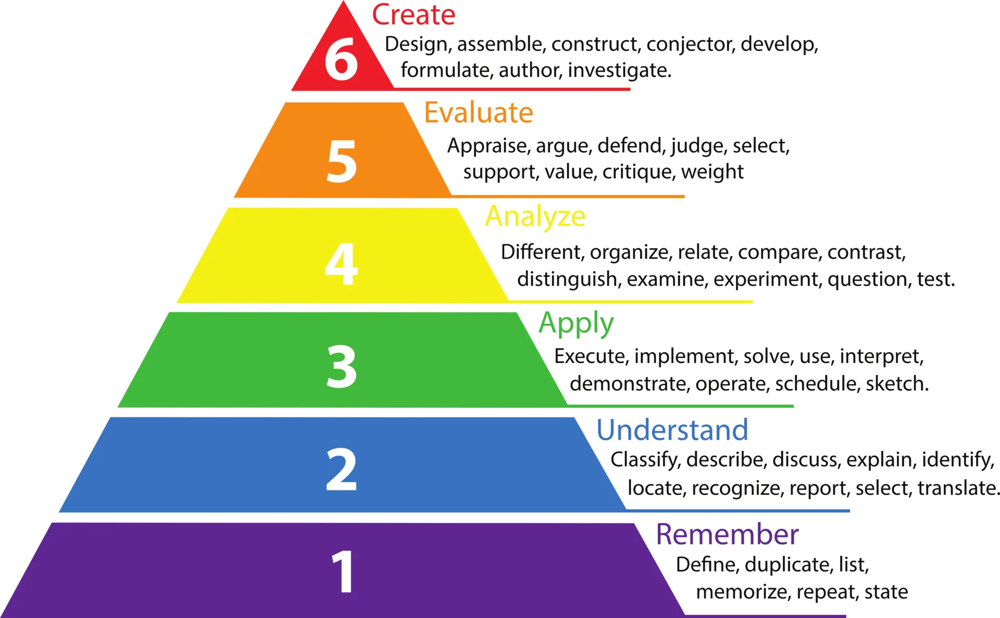
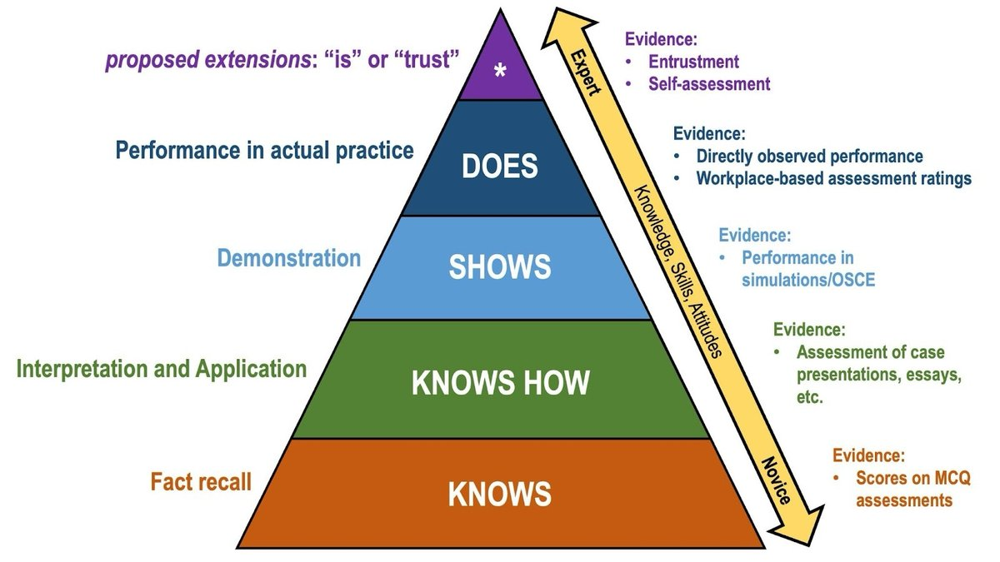
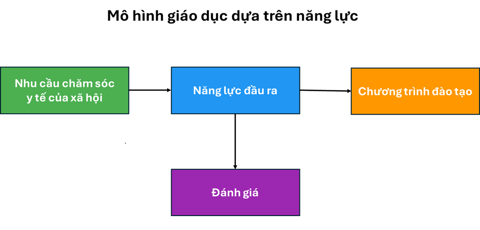
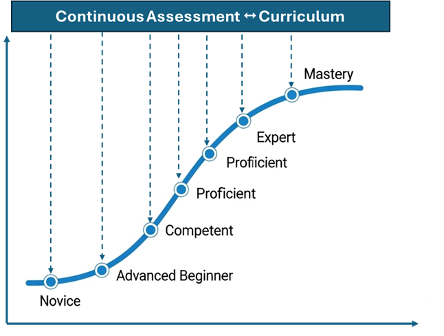

Tài liệu định hướng nhanh cho nền tảng quản trị ma trận PLO – Course – CLO – PI.
1. Các thuật ngữ chính
Glossary
Năng lực (Competence)
Là khả năng tổng hợp và liên tục phát triển của người hành nghề y, thể hiện qua việc thực hiện đúng đắn,
an toàn và hiệu quả các nhiệm vụ chuyên môn trong những hoàn cảnh khác nhau.
Năng lực cụ thể (Competency)
Là khả năng có thể quan sát và đánh giá được, phản ánh sự kết hợp giữa kiến thức, kỹ năng và thái độ,
nhằm thực hiện thành công một nhiệm vụ chuyên môn trong bối cảnh lâm sàng.
Giáo dục y khoa dựa trên năng lực (CBME – Competency-based Medical Education)
Là mô hình đào tạo y khoa tập trung vào kết quả đầu ra, trong đó sinh viên phải chứng minh được các năng lực
cụ thể có thể quan sát, nhằm đảm bảo họ đủ khả năng hành nghề an toàn, hiệu quả và đáp ứng nhu cầu chăm sóc
sức khỏe của xã hội.
PLO (Program Learning Outcomes – Chuẩn đầu ra chương trình)
Là tập hợp các năng lực mà người học phải đạt được sau khi hoàn thành toàn bộ chương trình đào tạo. PLO thường
bao gồm kiến thức, kỹ năng, thái độ và năng lực nghề nghiệp phù hợp với chuẩn quốc gia, khu vực và nhu cầu xã hội.
Đây là “đích đến” của chương trình, định hướng thiết kế toàn bộ học phần và hoạt động giảng dạy.
CLO (Course Learning Outcomes – Chuẩn đầu ra học phần)
Là các năng lực cụ thể mà sinh viên đạt được sau khi hoàn tất một học phần (môn học). CLO được thiết kế để
đóng góp trực tiếp vào việc đạt được các PLO, và thường diễn đạt bằng động từ theo thang Bloom.
Thang Bloom (Bloom’s Taxonomy)
Được Benjamin Bloom và cộng sự giới thiệu năm 1956, là mô hình phân loại các mức độ nhận thức trong học tập,
thường biểu diễn dạng kim tự tháp gồm 6 bậc từ thấp đến cao:
Nhớ (Remember): Ghi nhớ, nhận diện thông tin đã học.
Hiểu (Understand): Giải thích, diễn đạt ý nghĩa kiến thức.
Vận dụng (Apply): Sử dụng kiến thức vào tình huống mới.
Phân tích (Analyze): Tách biệt, so sánh, xác định mối quan hệ.
Đánh giá (Evaluate): Đưa ra nhận định, lập luận và quyết định.
Sáng tạo (Create): Kết hợp và phát triển ý tưởng mới.

Hình: Thang Bloom (6 bậc nhận thức từ Nhớ → Sáng tạo).
Tháp Miller (Miller’s Pyramid)
Do George Miller (1990) đề xuất để mô tả các mức độ năng lực lâm sàng của người học y khoa, nhấn mạnh tiến
triển từ kiến thức đến năng lực hành nghề thực tiễn. Gồm 4 tầng từ thấp đến cao:
Knows (Biết): Nắm vững kiến thức lý thuyết.
Knows How (Biết cách): Vận dụng kiến thức giải quyết vấn đề, lý luận lâm sàng, ra quyết định.
Shows How (Thể hiện được): Chứng minh năng lực thực hành trong mô phỏng hoặc tình huống được giám sát.
Does (Thực hiện): Hành nghề độc lập, thực hiện hiệu quả và an toàn trong bối cảnh thực tế.

Hình: Tháp Miller (Knows → Knows How → Shows How → Does).
2. Nguyên tắc xây dựng khung chương trình theo CBE
CBE
A. Nguyên tắc chính của giáo dục y khoa dựa trên năng lực (CBME)
1) Khung năng lực (Competency framework)
Trong chương trình đào tạo theo CBME, khung năng lực được coi là “xương sống” của toàn bộ chương trình. Khung này xác định rõ
các mức độ người học cần đạt được, dựa trên tháp Miller với bốn tầng. Điểm khác biệt quan trọng là CBME chú trọng nhiều hơn
đến năng lực thực hành và kỹ năng so với các mô hình truyền thống vốn thiên về kiểm tra kiến thức lý thuyết.
2) Tích hợp lý thuyết và thực hành (Integration of theory and practice)
CBME yêu cầu sự kết hợp chặt chẽ giữa kiến thức và thực tiễn. Người học không chỉ “nghe giảng” mà phải được đặt vào tình huống để:
Thực hành khách quan: qua OSPE/OSCE (Objective Structured Practical/Clinical Examination).
Mô phỏng: dùng tình huống ảo, phòng kỹ năng, mô hình trước khi áp dụng trên bệnh nhân thật.
Chu trình học tập trải nghiệm: trải nghiệm → phản tư → khái niệm hóa → ứng dụng.
3) Đánh giá và phản hồi (Assessment and feedback)
Nguyên tắc then chốt: đánh giá liên tục, đa dạng và dựa trên năng lực quan sát được.
Công cụ: quan sát trực tiếp, workplace-based assessment, mô phỏng, bảng kiểm kỹ năng.
Nguồn phản hồi: giảng viên, đồng nghiệp, người bệnh và tự phản hồi của sinh viên.
Ý nghĩa: giúp người học nhận diện điểm mạnh/yếu, điều chỉnh kịp thời thay vì chỉ dựa vào kỳ thi cuối kỳ.
4) Cá nhân hóa lộ trình học tập (Individualized learning pathways)
Kế hoạch học tập cá nhân dựa trên điểm mạnh/điểm cần cải thiện của từng sinh viên.
Vai trò chủ động: sinh viên đặt mục tiêu, chọn hoạt động phù hợp, theo dõi tiến trình với hỗ trợ của giảng viên.
Kết quả: tăng gắn kết, động lực và tính tự chủ.
5) Học tập suốt đời & phát triển nghề nghiệp liên tục (Lifelong learning & CPD)
Cập nhật liên tục: y học thay đổi, bác sĩ cần liên tục cập nhật kiến thức/kỹ năng.
Thói quen phản tư: tự đánh giá, tìm cơ hội phát triển, duy trì tiến bộ.
Trách nhiệm nghề nghiệp: năng lực gồm cả sức khỏe bản thân và thái độ đạo đức để hành nghề lâu dài.
B. Quy trình xây dựng chương trình đào tạo dựa trên năng lực (CBME)
Quy trình đi từ nhu cầu sức khỏe cộng đồng → chuẩn đầu ra mong muốn → năng lực cụ thể → milestones
→ hoạt động học tập → đánh giá theo năng lực → phản hồi cải tiến, bảo đảm đào tạo ra bác sĩ không chỉ
biết mà còn làm được, hành nghề an toàn, hiệu quả và đáp ứng nhu cầu xã hội.
1) Xác định nhu cầu sức khỏe của cộng đồng
Điểm khởi đầu là phân tích bối cảnh và nhu cầu sức khỏe dân số (dữ liệu y tế, ý kiến cộng đồng, cơ quan y tế công cộng, các bên liên quan)
để chương trình gắn trực tiếp với ưu tiên y tế của xã hội.

Hình minh họa: Xác định nhu cầu sức khỏe cộng đồng.
2) Xác định năng lực cần có của sinh viên sau tốt nghiệp (Desired outcomes)
Từ nhu cầu cộng đồng, xác định “đầu ra mong muốn” – các năng lực mà sinh viên phải có khi tốt nghiệp để đáp ứng kỳ vọng của người bệnh,
xã hội và hệ thống y tế. Năng lực cần quan sát/đo lường được, gắn với hiệu quả thực hành.
3) Xác định các năng lực và cấu phần (Define competencies & components)
Cụ thể hóa năng lực cốt lõi thành cấu phần nhỏ, dễ giảng dạy và đánh giá, giúp thiết kế học tập và công cụ đánh giá sát bối cảnh thực tế.
4) Xác định các mốc phát triển (Define milestones)
Các mốc (milestones) thể hiện sự tiến bộ từ cơ bản đến thành thạo; giúp giảng viên và sinh viên hình dung rõ lộ trình phát triển năng lực.

Hình minh họa: Các mốc phát triển năng lực (milestones).
5) Thiết kế hoạt động học tập và phương pháp giảng dạy
Chuyển năng lực & mốc thành trải nghiệm học tập: bài giảng, thực hành lâm sàng, mô phỏng, thảo luận nhóm, PBL.
Lộ trình linh hoạt, cá nhân hóa, vẫn đảm bảo đạt chuẩn năng lực.
6) Đánh giá người học theo năng lực (Assessment for competence)
Đánh giá là trung tâm: quan sát trực tiếp, OSCE/OSPE, bệnh nhân chuẩn hóa, phản hồi đa nguồn. Tiêu chuẩn đánh giá xác định trước,
không chấm theo đường cong.
7) Điều chỉnh và cải tiến dựa trên phản hồi
Thiết lập cơ chế lấy phản hồi từ sinh viên, giảng viên, người bệnh và hệ thống y tế để chương trình luôn cập nhật, phù hợp, hiệu quả.
3. Hướng dẫn sử dụng công cụ
How-to
(Placeholder) Sẽ bổ sung các bước thao tác: PLO–PI → PLO–Course → CLO–PLO → Phân bổ khung.
Nhập dữ liệu CSV/JSON
Chọn mức liên kết I/R/M/A
Kiểm tra phân bố Bloom & độ phủ PLO
Xuất báo cáo
4. Dữ liệu mẫu
Samples
Các tệp .csv dưới đây đã được đặt sẵn trong thư mục /assets. Nhấn để tải về.
Lưu ý: GitHub Pages phân biệt chữ HOA/thường và khoảng trắng trong tên tệp. Các liên kết dưới đây đã mã hoá khoảng trắng nếu có.
PI.csv
Các tiêu chuẩn và tiêu chí trong chuẩn năng lực bác sĩ YHCT (QĐ 3159/QĐ-BYT, 23/11/2022).
Bhattacharya S. Competency-based medical education: an overview.
Ann Med Sci Res. 2023;2(3):132-138.
Frank JR, Snell LS, Cate OT, et al. Competency-based medical education: theory to practice.
Med Teach. 2010;32(8):638-645.
Gruppen LD, Mangrulkar RS, Kolars JC. The promise of competency-based education in the health professions for improving global health.
Hum Resour Health. 2012;10(1):43.
Lee GB, Chiu AM. Assessment and feedback methods in competency-based medical education.
Ann Allergy Asthma Immunol. 2022;128(3):256-262.